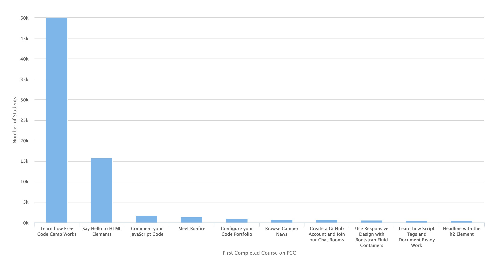
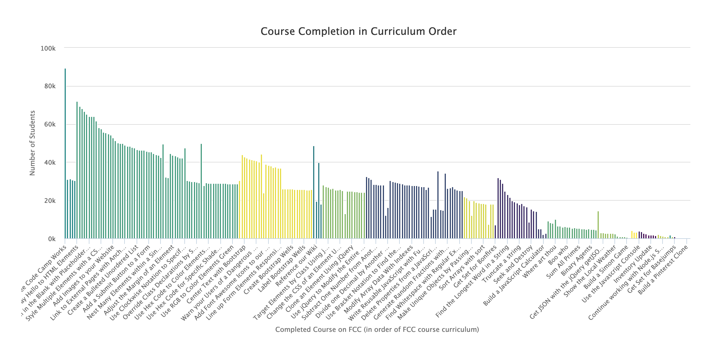
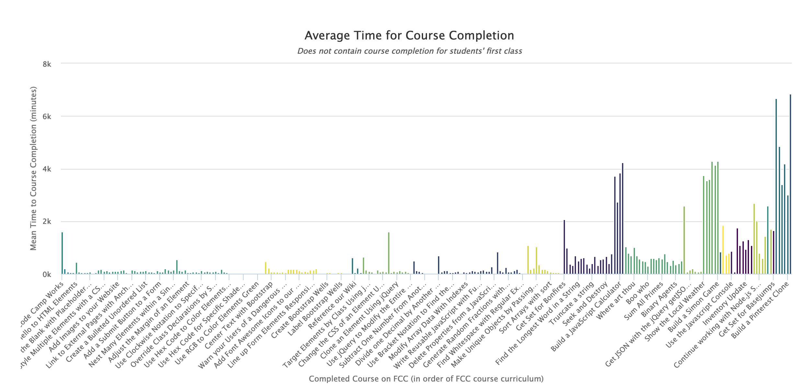
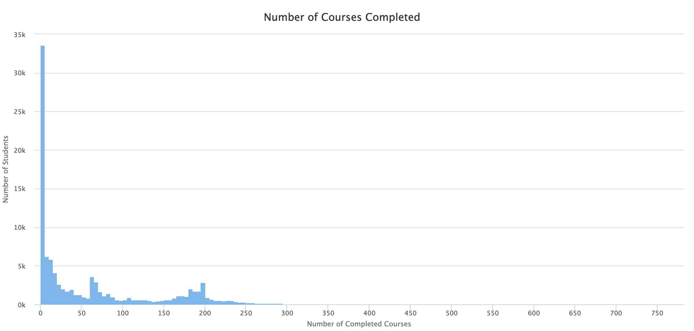
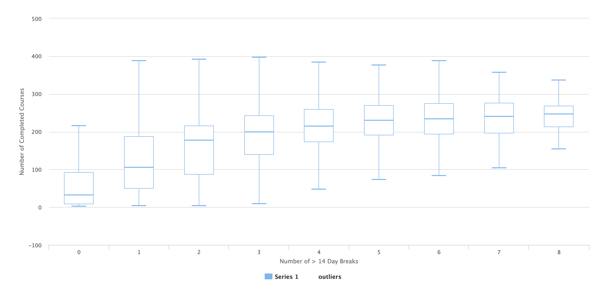
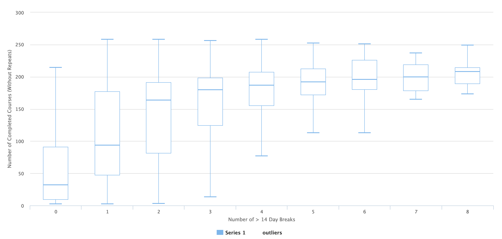
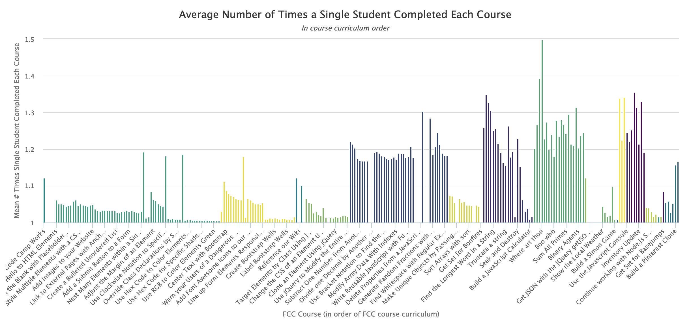

Data Visualizations
Now that I have my variables sorted and my data cleaned, let’s try to answer a few simple questions.
What class do FCC students start with?
- Does every student start with the same class?
# Separate out first courses
first <- sc_full4 %>%
filter(st_cour_num == 1) %>%
droplevels()
# How many different courses were the first ones taken?
length(unique(sc_full4))## [1] 17It looks like most users start in the same place. Let’s see how the popularity of first courses breaks down.
# Count number of students for each course first
first_2 <- first %>% group_by(course) %>% summarise(n = n()) %>%
ungroup() %>% mutate(rank = dense_rank(desc(n))) %>% filter(rank <=
10) %>% arrange(rank)
fig1 <- hchart(first_2, "column", x = course, y = n, zoomType = "x") %>%
hc_xAxis(title = list(text = "First Completed Course on FCC")) %>%
hc_yAxis(title = list(text = "Number of Students"), max = 50000) %>%
hc_chart(zoomType = "x")
fig1
Note: this figure that was once interactive has now been replaced with a static image. The above interactive code should still work, though if you choose to use it
So about 48% of users start with the very first course in the curriculum “Learn How Free Code Camp Works”, another 10% skip straight to the first course in the “HTML5 and CSS” section to start their FCC journey. The remaining 42% of users started their first class on random courses throughout the curriculum.
Which classes are the most popular?
- How many students completed each course at some point?
- Note: This figure is zoom-able!
pop_fig <- sc_full4 %>%
group_by(overallnum, section, course) %>%
summarise(count = n()) %>%
arrange(overallnum) %>% ungroup()
# Plot
fig2 <- hchart(pop_fig, "column", x = course, y = count, color = section) %>%
hc_title(text = "Course Completion in Curriculum Order") %>%
hc_xAxis(title = list(text = "Completed Course on FCC (in order of FCC course curriculum)")) %>%
hc_yAxis(title = list(text = "Number of Students"), max = 1e+05) %>%
hc_chart(zoomType = "xy") %>%
hc_tooltip(headerFormat = "",
pointFormat = "<b>Class: {point.course}</b> <br>
Section: {point.section}<br>
Number of Students: {point.y}")
fig2
Note: this figure that was once interactive has now been replaced with a static image. The above interactive code should still work, though if you choose to use it
It definitely seems like the courses offered earlier in the curriculum are completed more frequently than courses offered later in the curriculum. There is also a spike in course completion at the beginning of the “HTML5 and CSS” and “Responsive Design with Boostrap” sections that declines throughout the course section. In the latter, that drop-off seems to happen sharply after the course “Line up Form Elements Responsively with Bootstrap” where almost 11,000 did not complete the next course.
I wonder how the amount of time spent on courses changes throughout the curriculum, as courses (theoretically) get more difficult.
For this figure, I eliminated all course completion times that were over 1,210,000 seconds (14 days).
time_spent <- sc_full4 %>%
group_by(overallnum, section, course) %>%
filter(!is.na(time_since_last)) %>%
filter(time_since_last < 1210000) %>%
mutate(time_since_last_m = time_since_last/60) %>%
summarise(median = median(time_since_last_m),
mean = mean(time_since_last_m),
sd = sd(time_since_last_m))
fig3 <- hchart(time_spent, "column", x = course, y = mean, color = section) %>%
hc_title(text = "Average Time for Course Completion") %>%
hc_subtitle(text = "<i>Does not contain course completion for students' first class</i>") %>%
hc_xAxis(title = list(text = "Completed Course on FCC (in order of FCC course curriculum)")) %>%
hc_yAxis(title = list(text = "Mean Time to Course Completion (minutes)"),
max = 6800) %>% hc_chart(zoomType = "xy") %>% hc_tooltip(headerFormat = "",
pointFormat = "<b>Class: {point.course}</b> <br>Section: {point.section}<br>Mean time to completion: {point.y} minutes",
valueDecimals = 2)
fig3
Note: this figure that was once interactive has now been replaced with a static image. The above interactive code should still work, though if you choose to use it
The class that took the longest to complete (“Claim Your Backend Development Certificate” with average 6845 minutes or 4.75 days) is the last and one of the least popular courses in the curriculum. It is possible that students completed all of the other courses and returned to FCC days later to claim their certificate.
The next courses that took the longest to complete were:
- Build a Voting App (6675 minutes or 4.6 days)
- Build a Nightlife Coordination App (4861 minutes or 3.4 days)
- Use the Twitchtv JSON API (4289 minutes or 3 days)
- Build a Simon Game (4280 minutes or 3 days)
These courses either came immediately after a break (that was less than two weeks in duration) for many students or took students longer on these courses than others in the curriculum. It may be worth investigating how long each of these projects is projected to take.
How do students flow through the courses?
Originally, I planned to depict student flow through the various FCC courses using a Sankey plot, but with so many courses in the curriculum this did not seem like a good option. I decided to visualize student course map as a network using the igraph and highcharter packages. Below, color indicates the section of each course, connections indicate flow of students from one course to another and the thickness of each connection indicates how many students followed that path. The size of each circle indicates how many students have taken each course.
Hover over any point for more information and zoom in on sections for clearer detail
nodes <- sc_full4 %>%
group_by(course, section, overallnum) %>%
summarise(count = n()) %>%
ungroup()
edges <- sc_full4 %>%
group_by(from_course, to_course) %>%
summarise(weight = n()) %>%
filter(!is.na(to_course), !is.na(from_course)) %>%
ungroup() %>%
filter(weight > 200)
# Make graph object
net <- graph.data.frame(edges, nodes, directed = FALSE)
V(net)$color <- colorize(V(net)$section)
V(net)$size <- V(net)$count
E(net)$width <- E(net)$weight/4000
V(net)$Course_Number <- nodes$overallnum
# Plot graph using highcharter
set.seed(10)
fig4 <- hchart(net, minSize = 3, maxSize = 20, layout = layout_nicely)
fig4
Note: this figure that was once interactive has now been replaced with a static image. The above interactive code should still work, though if you choose to use it
There are several notable things about this figure:
- The “Getting Started” section is the “jumping off point” for many different tracks
- One of the most frequently used tracks runs through the HTML5 and CSS section
- Certain parts of the HTML5 and CSS section (i.e., the parts all about changing colors) are taken in order, while others skip entire chunks of the section (See the heavily followed path from class #8 (Inform with the Paragraph Element) and class #40 (Check radio buttons and checkboxes by default)).
- Users tend to flow straight from the jQuery section into Basic JavaScript following classes mostly in the recommended order
- Fewer users flow through the Intermediate and Advanced algorithm scripting sections than the Basic algorithm scripting section
- Several courses don’t follow any typical flow with the rest of the course curriculum. These courses seem to be treated as “stand-alone” courses instead of integrated parts of the map, but are also infrequently taken in general. These courses are:
- Courses in the Node.js and Express.js section
- “Get Set for Basejumps”
- “Save your code revisions forever with Git”
- Courses in the Dynamic Web application section
How many courses do students take?
Given that there are 344 courses in the curriculum map that match the courses that these students have taken, how many does each student generally take?
student_courses <- sc_full4 %>%
group_by(.id) %>%
mutate(time = as.numeric(time_since_last, units = "mins")) %>%
summarise(count = n(),
total_time = sum(time, na.rm = TRUE),
median_time = median(time, na.rm = TRUE),
average_time = mean(time, na.rm = TRUE)) %>%
mutate(time_per_class = (total_time/count)) %>%
filter(count > 0)
fig5 <- hchart(student_courses$count) %>%
hc_title(text = "Number of Courses Completed") %>%
hc_chart(zoomType = "xy") %>%
hc_xAxis(title = list(text = "Number of Completed Courses")) %>%
hc_yAxis(title = list(text = "Number of Students"), max = 35000) %>%
hc_legend(enabled = FALSE)
fig5
Note: this figure that was once interactive has now been replaced with a static image. The above interactive code should still work, though if you choose to use it
Wow! There’s a few things to point out here:
- The highest number of students (33,563 or 33% of students) completed only between 1 and 5 courses.
- The highest number of courses completed is 775! Since we’re only looking at 344 courses here, that’s a bit surprising. That student would have needed to complete almost every course twice! Is that the only student who has taken courses more than once?
multi_class <- student_courses %>%
filter(count > 344)
nrow(multi_class)## [1] 219219 students have taken more than the offered 344 courses and thus must have repeated some! It’s possible that the other students have repeated some courses too. I’ll come back to that.
Can you group students based on the number of classes they take vs. the amount of time they spend per class?
The FCC folks who released this dataset seem interested in ways to group their students. I’m curious if this can be done by looking at the number of courses students have completed in comparison to the amount of time spent per course. Do students who complete classes more quickly tend to burn out quickly and ultimately take fewer courses?
student_courses2 <- student_courses %>%
filter(count > 1)
ggplot(student_courses2, aes(x = count, y = median_time)) + geom_point(alpha = 1/4) +
labs(x = "Number of Completed Courses", y = "Average time per Course (minutes)")
This figure is a little overwhelmed with outliers who spent a very long time completing few courses.
I’d like to see what this looks like if students don’t take breaks between classes, so I’m going to remove any entries where the time to complete the course was greater than 14 days.
student_no_break <- sc_full4 %>%
filter(overallnum > 5) %>% group_by(.id) %>%
mutate(time = as.numeric(time_since_last, units = "mins")) %>%
summarise(count = n(), total_time = sum(time, na.rm = TRUE),
median_time = median(time, na.rm = TRUE),
average_time = mean(time, na.rm = TRUE),
max_time = max(time, na.rm = TRUE)) %>%
filter(count > 1, max_time < 20160) %>%
mutate(time_per_class = (total_time/count))
ggplot(student_no_break, aes(x = count, y = average_time)) +
geom_point(alpha = 1/4) + labs(x = "Number of Completed Courses",
y = "Average time per Course (minutes)")
Generally speaking, it looks like students who complete courses quickly (not including any breaks) complete the most courses overall. But what if we take breaks into account?
Does taking a 2 week break help or hurt course completion?
I wanted to look at a box plot of course completion depending on the number of breaks students completed.
total_breaks <- sc_full4 %>%
group_by(.id) %>%
mutate(time = as.numeric(time_since_last, units = "mins")) %>%
summarise(breaks = length(.id[time > 20160])) %>%
mutate(breaks = breaks - 1) %>%
ungroup()
breaks <- left_join(total_breaks, student_courses, by = ".id")
multi_class_breaks <- breaks %>%
filter(count > 1)
fig6 <- highchart() %>%
hc_add_series_boxplot(multi_class_breaks$count, multi_class_breaks$breaks) %>%
hc_xAxis(title = list(text = "Number of > 14 Day Breaks")) %>%
hc_yAxis(title = list(text = "Number of Completed Courses"),
max = 500)
fig6
Note: this figure that was once interactive has now been replaced with a static image. The above interactive code should still work, though if you choose to use it
It seems possible that taking one or more 2 week breaks from the FCC program may actually have a positive impact on the number of courses completed. However, it is unclear at this time if any of those courses are repeats. Let’s try to take out repeat courses.
no_repeats <- sc_full4 %>%
group_by(.id) %>%
distinct(course) %>%
summarise(nr_count = n()) %>%
ungroup()
no_repeat_join <- left_join(no_repeats, breaks, by = ".id")
nr_multi <- no_repeat_join %>% filter(nr_count > 1)
fig7 <- highchart() %>%
hc_add_series_boxplot(nr_multi$nr_count, nr_multi$breaks) %>%
hc_xAxis(title = list(text = "Number of > 14 Day Breaks")) %>%
hc_yAxis(title = list(text = "Number of Completed Courses (Without Repeats)"),
max = 300,
min = 0)
fig7
Note: this figure that was once interactive has now been replaced with a static image. The above interactive code should still work, though if you choose to use it
Even taking repeated courses out of the dataset seems to indicate that of students who completed more than one course, the presence of one or more 2 week breaks actually increases the median number of courses that will be completed. It may be worth encouraging students to take short breaks between classes if they feel they need to.
Which courses tend to be repeated by students?
repeats <- sc_full4 %>%
group_by(.id, section, overallnum, course) %>%
summarise(course_count = n()) %>%
ungroup() %>%
group_by(overallnum, section, course) %>%
summarise(student_repeats = n(),
avg_repeats = mean(course_count)) %>%
arrange(overallnum)
fig8 <- hchart(repeats, "column", x = course, y = avg_repeats, color = section) %>%
hc_title(text = "Average Number of Times a Single Student Completed Each Course") %>%
hc_subtitle(text = "<i>In course curriculum order</i>") %>%
hc_xAxis(title = list(text = "FCC Course (in order of FCC course curriculum)")) %>%
hc_yAxis(title = list(text = "Mean # Times Single Student Completed Each Course"),
max = 1.5, min = 1) %>%
hc_chart(zoomType = "xy") %>%
hc_tooltip(headerFormat = "", pointFormat = "<b>Class: {point.course}</b> <br>
Section: {point.section}<br>
Mean times course taken by single student: {point.y} times",
valueDecimals = 2)
fig8 /
Note: this figure that was once interactive has now been replaced with a static image. The above interactive code should still work, though if you choose to use it
The courses closest to 1 in this figure were repeated the fewest number of times by students. The most commonly repeated course in the entire curriculum was “Where art thou”, a course near the beginning of the “Intermediate Algorithm Scripting” Section.
Generally speaking, sections with the most repeated courses were:
- Basic JavaScript
- Basic Algorithm Scripting
- Intermediate Algorithm Scripting
- Automated Testing and Debugging
- Advanced Algorithm Scripting
This could indicate that the courses in these sections are simply more difficult than other sections or that the material in these courses needs to be viewed more than once to completely comprehend the material. Either way, the content in these course sections should be assessed.
Can we predict the number of courses a student will complete using machine learning?
I’m going to use some simple machine learning to see if I can predict the number of courses a student will complete (not counting repeated courses). I’m going to include 4 variables in this model:
- First completed course
- Number of repeated courses
- Number of 14 day breaks
- Median course completion time (not including > 14 day breaks)
First, I need to transform my dataset to fit into a frame with the needed variables. To remain consistent, I’ll once again use dplyr functions for this.
repeat_students <- sc_full4 %>%
group_by(.id) %>%
summarise(total_count = n()) %>%
ungroup() %>%
filter(total_count > 1)
first_course <- sc_full4 %>%
group_by(.id) %>%
filter(st_cour_num == 1) %>%
select(1:2) %>%
ungroup()
repeated_courses <- sc_full4 %>%
group_by(.id, course) %>%
summarise(course_count = n()) %>%
filter(course_count > 1) %>%
summarise(repeat_count = n()) %>%
ungroup()
breaks_courses <- sc_full4 %>%
group_by(.id) %>%
mutate(time = as.numeric(time_since_last, units = "mins")) %>%
summarise(breaks = length(.id[time > 20160])) %>%
mutate(breaks = breaks - 1) %>%
ungroup()
median_courses <- sc_full4 %>%
group_by(.id) %>%
mutate(time = as.numeric(time_since_last, units = "mins")) %>%
filter(time < 20160) %>%
summarise(median_time = median(time, na.rm = TRUE)) %>%
ungroup()
completed_courses <- sc_full4 %>%
group_by(.id) %>%
distinct(course) %>%
summarise(nr_count = n()) %>%
ungroup()
mlset <- left_join(repeat_students, first_course, by = ".id")
mlset <- left_join(mlset, repeated_courses, by = ".id")
mlset <- left_join(mlset, breaks_courses, by = ".id")
mlset <- left_join(mlset, median_courses, by = ".id")
mlset <- left_join(mlset, completed_courses, by = ".id")
# Replacing NA in repeat_count column with 0
mlset$repeat_count[is.na(mlset$repeat_count)] <- 0
# Making course into a factor
mlset$course <- as.factor(mlset$course)Now that the dataframe is set up the way I want (a single row per student and only the variables I’m interested in), I’m going to randomize the dataset and extract a test set.
# Set random seed
set.seed(1)
# Shuffle rows of data set
n <- nrow(mlset)
shuffled <- mlset[sample(n), ]
# Perform 70/30 split (70% to training set, 30% to test set)
train_indices <- 1:round(0.7 * n)
train <- shuffled[train_indices, ]
test_indices <- (round(0.7 * n) + 1):n
test <- shuffled[test_indices, ]Fitting a baseline model
Without adding any extra variables, how well can we predict the number of courses that a student will complete? Without any additional variables, my best guess is that the mean number of courses taken (without replication) would help us predict the number of courses completed. This will give us a baseline to compare our more complex models with. Wow a RMSE of 73.17!
# Creating baseline model
baseline <- mean(train$nr_count)
# Evaluate RMSE on the test set
base_test <- sqrt(mean((baseline - test$nr_count)^2))
base_test## [1] 73.17323Creating trainControl
Since I plan to use the caret package to test two different models for these data, I will create a system that will perform a 10-fold cross-validation of the training dataset.
myControl <- trainControl(method = "cv", number = 10, verboseIter = TRUE)Fitting a random forest model
The first type of model I’d like to use is a random forest model (using the ranger and caret packages and the trainControl object I just created).
rf_model <- train(nr_count ~ course + repeat_count + breaks +
median_time, data = train, tuneLength = 3, method = "ranger",
trControl = myControl, importance = "impurity")rf_model## Random Forest
##
## 55502 samples
## 4 predictor
##
## No pre-processing
## Resampling: Cross-Validated (10 fold)
## Summary of sample sizes: 49951, 49952, 49952, 49952, 49953, 49951, ...
## Resampling results across tuning parameters:
##
## mtry RMSE Rsquared
## 2 69.16746 0.2839369
## 122 58.47552 0.3601910
## 243 66.00565 0.2475999
##
## RMSE was used to select the optimal model using the smallest value.
## The final value used for the model was mtry = 122.Our model is an OK fit, explaining about 55% of the variation in our model with a RMSE of 49.
Fitting a glmnet model
I’m also going to try to fit a glmnet model to these data.
glm_model <- train(nr_count ~ course + repeat_count + breaks +
median_time, data = train, tuneLength = 3, method = "glmnet",
trControl = myControl)## Loading required package: glmnet
## Loading required package: Matrix
##
## Attaching package: 'Matrix'
## The following object is masked from 'package:tidyr':
##
## expand
## Loading required package: foreach
## Loaded glmnet 2.0-5glm_model## glmnet
##
## 55502 samples
## 4 predictor
##
## No pre-processing
## Resampling: Cross-Validated (10 fold)
## Summary of sample sizes: 49952, 49950, 49952, 49952, 49951, 49952, ...
## Resampling results across tuning parameters:
##
## alpha lambda RMSE Rsquared
## 0.10 0.05861448 64.27342 0.2272597
## 0.10 0.58614484 64.23881 0.2280560
## 0.10 5.86144844 64.26716 0.2287188
## 0.55 0.05861448 64.25864 0.2276078
## 0.55 0.58614484 64.17347 0.2297203
## 0.55 5.86144844 64.84995 0.2170755
## 1.00 0.05861448 64.23882 0.2280713
## 1.00 0.58614484 64.21272 0.2288975
## 1.00 5.86144844 65.07230 0.2166004
##
## RMSE was used to select the optimal model using the smallest value.
## The final values used for the model were alpha = 0.55 and lambda
## = 0.5861448.The best glmnet model explained about 48% of the variance in our dataset with a RMSE of about 53.
Comparing Model Fit
# Create a list of models
models <- list(rf = rf_model, glmnet = glm_model)
# Resample the models
resampled <- resamples(models)
# Generate a summary
summary(resampled)##
## Call:
## summary.resamples(object = resampled)
##
## Models: rf, glmnet
## Number of resamples: 10
##
## RMSE
## Min. 1st Qu. Median Mean 3rd Qu. Max. NA's
## rf 57.79 57.91 58.52 58.48 58.85 59.50 0
## glmnet 63.36 64.06 64.27 64.17 64.34 64.75 0
##
## Rsquared
## Min. 1st Qu. Median Mean 3rd Qu. Max. NA's
## rf 0.3312 0.3510 0.3629 0.3602 0.3724 0.3781 0
## glmnet 0.2204 0.2258 0.2268 0.2297 0.2317 0.2487 0# Plot the differences between model fits
dotplot(resampled, metric = "RMSE")
dotplot(resampled, metric = "Rsquared")
So our Random Forest model has a better fit and a lower error than the glmnet model. Let’s see which predictors were the most important to that model.
# Creating a Variable Importance variable
vimp <- varImp(rf_model)
# Plotting 'vimp'
ggplot(vimp, top = 20[1])
The median time spent on each class is the most important variable in our current model, followed by the first course in the series, and the number of courses that were repeated.